Chỉ duyệt, chưa nhập game. AI: Codex image_gen, lượt 2/3, cắt mềm rồi chuẩn hóa khung 64 px và hạ theo vùng về 32/24, lượng tử 32 màu. Ảnh game-icons hiện có giữ nguyên byte, hiển thị ở ba cỡ để so; nguồn/tác giả từng icon ở art/CREDITS.md, giấy phép CC BY 3.0.
| Menu | AI 64 | game-icons 64 | AI 32 | game-icons 32 | AI 24 | game-icons 24 |
|---|---|---|---|---|---|---|
| Hồn sư (H) | 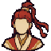 | 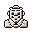 | ||||
| Đội hình (V) | 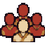 | 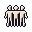 | ||||
| Túi đồ (B) | 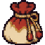 | 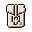 | 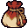 | 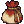 | ||
| Cộng minh (K) | 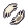 | |||||
| Cài đặt | ||||||
| Tự động (T) | ||||||
| Kênh | ||||||
| Vùng (N) | ||||||
| Thế giới (M) | ||||||
| Bạn bè | 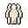 | |||||
| Xếp hạng | 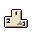 | |||||
| Nhiệm vụ | 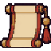 | 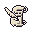 | 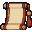 | |||
| Chat | ||||||
| Đấu trường | 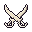 | 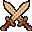 | ||||
| Cửa hàng | 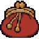 | |||||
| Rèn |
Chủ repo chọn bộ AI hoặc giữ game-icons; PR này không quyết định thay icon.